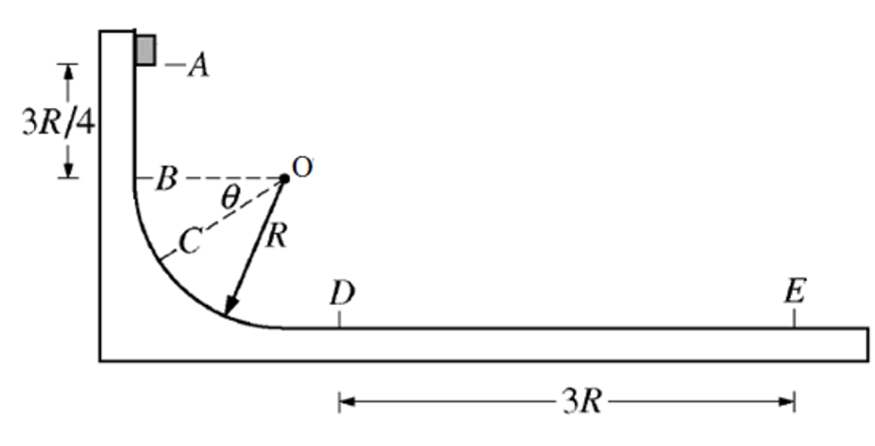

שאלה 4
בפארק שעשועים נמצא המתקן הבא:

קרונית שמסתה M יחד עם נוסע בתוכה (התייחסו לקרונית ולנוסע כגוף נקודתי) משוחררת ממנוחה מנקודה A.
הקרונית נופלת חופשית מנקודה A לנקודה B לאורך מרחק אנכי 3⁄4R.
לאחר מכן היא נעה לאורך קשת מעגלית חלקה (הנמצאת בין הנקודות B ו-D) בעלת רדיוס R.
הנקודה C נמצאת על הקשת המעגלית. הישר OC יוצר זווית θ מתחת לישר OB האופקי.
הקרונית ממשיכה לנוע על משטח אופקי DE מחוספס (שאינו חלק) עד שהיא נעצרת בנקודה E.
א.
סרטטו תרשים של הכוחות הפועלים על הקרונית בנקודה C. (3.33 נקודות)
ב.
בטאו באמצעות הפרמטרים: θ, M ו-g (תאוצת הנפילה החופשית) את גודל שקול הכוחות הרדיאלי, ΣFr, הפועל על הקרונית בנקודה C. (10 נקודות)
ג.
מצאו את מהירות הקרונית בנקודה D.
בטאו את תשובתכם באמצעות הפרמטרים (או חלקם): R, M ו-g (תאוצת הנפילה החופשית). (7 נקודות)
בטאו את תשובתכם באמצעות הפרמטרים (או חלקם): R, M ו-g (תאוצת הנפילה החופשית). (7 נקודות)
ד.
נתון כי אורכו של הקטע DE שווה ל-d = 3R. חשבו את הערך המספרי של מקדם החיכוך, μ, בין הקרונית לבין קטע DE של המסילה. (10 נקודות)
ה.
לפניכם היגד: "גודלו של כוח החיכוך הקינטי הפועל על גוף תמיד שווה למכפלת מקדם החיכוך הקינטי בגודל כוח הכבידה הפועל על הגוף (mg)".
אם ההיגד נכון - נמקו!
אם ההיגד איננו נכון - הביאו דוגמה התומכת בדעתכם. (3 נקודות)
אם ההיגד נכון - נמקו!
אם ההיגד איננו נכון - הביאו דוגמה התומכת בדעתכם. (3 נקודות)